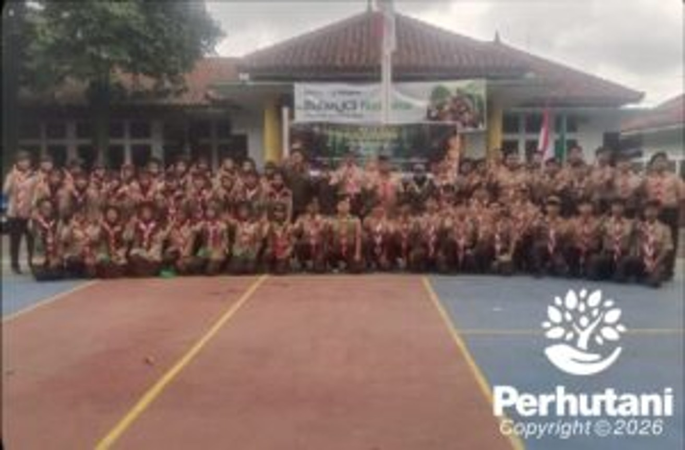

KUNINGAN, PERHUTANI (25/01/2026) | Perum Perhutani Kesatuan Pemangkuan Hutan (KPH) Kuningan mendukung pelaksanaan Kegiatan Pelantikan Tapak Rimba (Petara) Tahun 2026 telah dilaksanakan dengan lancar pada Minggu, (25/01/ 2026) di Kabupaten Kuningan. Kegiatan ini menjadi momentum penting dalam membangun semangat kebersamaan, kedisiplinan, serta komitmen anggota Tapak Rimba dalam mendukung pelestarian alam dan lingkungan.
Pelantikan tersebut mendapat dukungan dari berbagai pihak, di antaranya Perum Perhutani yang melibatkan Wakil Administratur, Kepala Sekisi Sumber Daya Manusia (KSS SDM), Staf Umum, serta Staf Keuangan (OS). Selain itu, kegiatan ini juga didukung oleh Balai Taman Nasional Gunung Ciremai (BTNGC) dan Cabang Dinas Kehutanan (CDK) Wilayah III Kuningan.
Administratur Perum Perhutani KPH Kuningan, Siti Kasanah, dalam keterangannya menyampaikan bahwa kegiatan Tapak Rimba memiliki peran strategis dalam menanamkan nilai kepedulian terhadap hutan dan lingkungan sejak dini.“Pelantikan Tapak Rimba ini bukan hanya kegiatan seremonial, tetapi menjadi wadah pembentukan karakter generasi muda agar memiliki kepedulian, tanggung jawab, dan kecintaan terhadap kelestarian hutan dan lingkungan,” ujarnya.
Sementara itu, Toni Anwar, selaku Kepala Balai Taman Nasional Gunung Ciremai (TNGC), menyampaikan apresiasi atas terselenggaranya kegiatan tersebut. Menurutnya, sinergi lintas instansi sangat penting dalam mendukung upaya konservasi sumber daya alam.“Kami mengapresiasi kolaborasi yang terjalin dalam kegiatan ini. Tapak Rimba merupakan mitra strategis dalam mendukung upaya pelestarian kawasan konservasi, khususnya di wilayah Gunung Ciremai,” ungkapnya.
Hal senada disampaikan oleh Ahmad Subagja, selaku Kepala CDK Wilayah III Kuningan, yang menilai kegiatan Tapak Rimba sebagai sarana pembinaan generasi muda dalam membangun kesadaran dan kepedulian terhadap kelestarian hutan.“Melalui kegiatan seperti ini, diharapkan lahir generasi yang memiliki wawasan kehutanan serta mampu berperan aktif dalam menjaga dan melestarikan lingkungan secara berkelanjutan,” tuturnya.
Dukungan juga diberikan oleh seluruh jajaran, mulai dari pimpinan hingga anggota Majelis Pimpinan, sehingga seluruh rangkaian kegiatan dapat terlaksana dengan tertib, aman, dan sesuai dengan rencana. Atas sinergi dan kebersamaan seluruh pihak yang terlibat, kegiatan pelantikan berjalan dengan baik dan penuh kekhidmatan.Panitia pelaksana menyampaikan rasa syukur serta terima kasih yang sebesar-besarnya kepada seluruh kakak-kakak yang telah berpartisipasi dan memberikan dukungan penuh, sehingga kegiatan Pelantikan Tapak Rimba (Petara) Tahun 2026 dapat berjalan dengan sukses.
Editor: WK
Copyright © 2026 Warta Nusantara Barat